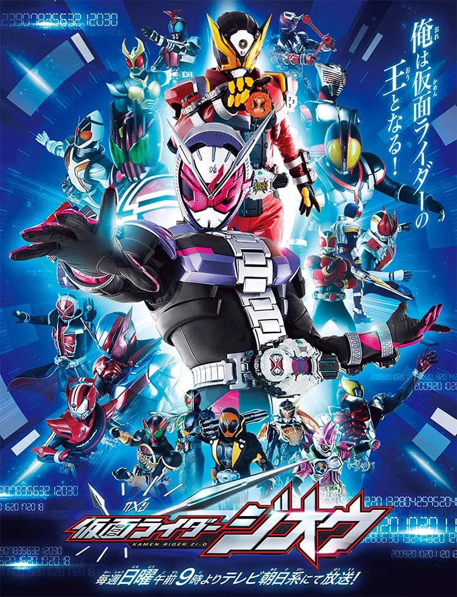

Kamen Rider Zi-O
This article is about a series entry (the 33rd) in the Kamen Rider Series
Kamen Rider Zi-O (仮面ライダージオウ, Kamen Raidā Jiō) is a Japanese tokusatsu drama in Toei Company's Kamen Rider Series. It is the twentieth and final entry of the Heisei Era, serving to commemorate its 20th Anniversary, and the thirty-third series overall. The series premiered on September 2, 2018 and joined Kaitou Sentai Lupinranger VS Keisatsu Sentai PatrangerIcon-crosswiki in the Super Hero Time line-up after the finale of Kamen Rider Build. After Lupinranger VS Patranger’s conclusion, it was joined by 4 Week Continuous Special Super Sentai Strongest Battle!!Icon-crosswiki in February 2019 and later Kishiryu Sentai RyusoulgerIcon-crosswiki in March 2019.
The motif of the series is time. The series' tagline is "I will become the king of Kamen Riders!" (俺は仮面ライダーの王となる！, Ore wa Kamen Raidā no ō to naru!). Much like Kamen Rider Decade, it commemorates all of the Heisei-era Kamen Riders to date.
Production
The initial plan for the 2018 season was supposed to be Kamen Riders
piloting giant robots to fight each other. However, crews had stated
that it shares too much similarities with Super Sentai franchise.
Therefore, the brainstorm groups added a concept that those robots are
able to travel in time, and makes sense if the protagonist can meet
with previous Legend Rider, and put into production following this idea.
Producer Shirakura stated that like Decade, Zi-O was the culmination
of the entire Heisei-era, which would end when Prince Naruhito ascended
to the Japanese throne in 2019. Viewership ratings from Build were at
a new low, and Shirakura noticed that those ratings were 40% higher
during Decade. Shirakura was also extremely hesitant to bring back
former actors as well as deal with the tricky concepts of time travel
like Den-O, but his associate producers convinced him to tackle them
as Shirakura was willing to give it a try.
Both Gaim and Ghost had began the idea of having multiple Riders use
the same transformation belt, similar to how Super Sentai Rangers
transform using the same device but in a more controlled setting.
Shirakura had liked the idea, and allowed both Geiz and Tsukuyomi to
use a Ziku-Driver like Sougo to transform. During the original designing
stages for Zi-O's suit, Shirakura was interested in the motif of time
itself he felt it symbolized the Heisei-era, so "Rider" in katakana was
added to Zi-O's mask for his default form. To differentiate Zi-O's
means of transportation and time travel, the Time Mazine was introduced
as opposed to a train and other supernatural means.